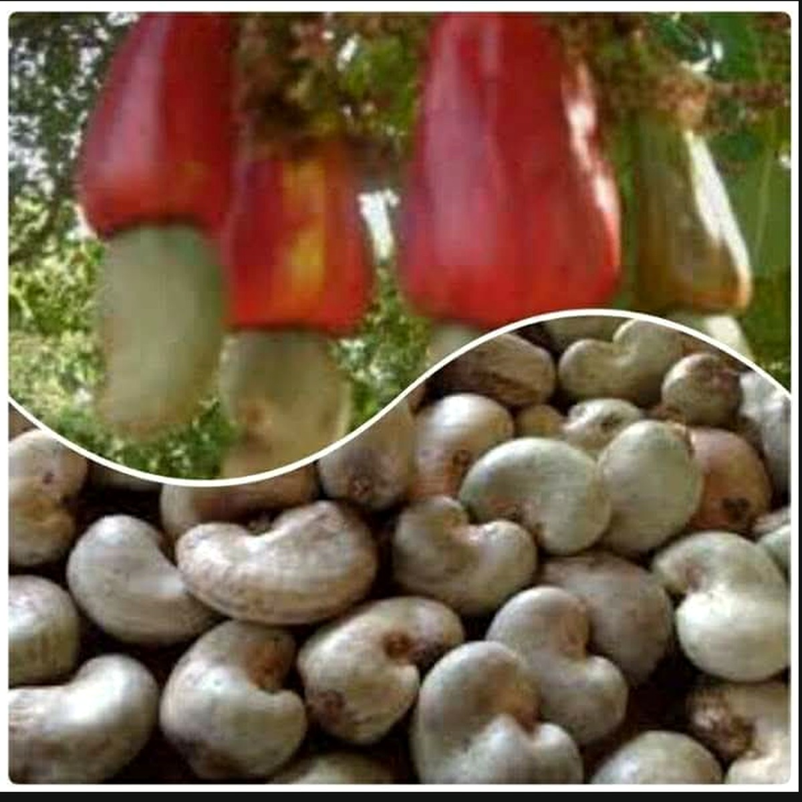

CTIA GUINÉE TRADING
SOCIÉTÉ MULTISECTORIELLE · CONAKRY
Anacarde / Akazu
FR
EN
WhatsApp
☰
01 · AGRO & COMMERCE
RAW CASHEW NUTS
Guinée · Kankan / Boké
KOR
46–50 lbs / sac 80 kg
Max. 8–10 %
Nut count
180–200 / kg
COCOA
Région Forestière
Max. 7.5 %
100–105 / 100 g
Jute · 62.5 kg
ROBUSTA COFFEE
Guinée
Max. 12.5 %
13–18
Jute · 60 kg

WhatsApp
×